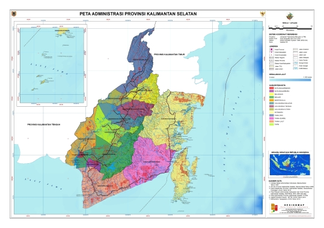

Banjarmasin kota terbesar di provinsi Kalimantan Selatan, yang berada di Indonesia. Kota ini
pernah
menjadi ibu kota provinsi Kalimantan dan provinsi Kalimantan Selatan
Sejarah
Logo Provinsi Banjarmasin
Kota Banjarmasin yang dulu dikenal dengan Kota Tatas berawal
dari sebutan wilayah Kuin yang dipimpin oleh Patih Masih yang berasa dari desa Oloh Masih.
Desa Oloh Masih ini yang kemudian berkembang menjadi kampung Banjarmasin yang kemudian
dipimpin
oleh
Pangeran Samudera yang merupakan Putera Kerajaan Daha untuk menjadi raja di wilayah ini.
Sejak itu berdirilah kerajaan Banjar yang kemudian menaklukkan Muaran Baan dan menjadikan
sungai
sebagai jalur perdagangan.
Kerajaan Banjar yang diserang Kerajaan Demak akhirnya bersekutu setelah menerima ajaran
Islam.
Keduanya lalu menyerbu Daha dan menguasainya.
Peristiwa saat Pangeran Samudera memeluk Islam dan bergelar Sultan Suriansyah pada tanggal
24
September 1526/6 Dzulhijjah 932 H dijadikan Hari Jadi Kota Banjarmasin.
Geografis

Peta Provinsi Banjarmasin
Dilansir dari Kota Banjarmasin dalam Angka Tahun 2022 yang dikeluarkan BPS, letak Kota
Banjarmasin
secara astronomis
berada di antara 3°16'46" sampai dengan 3°22'54" Lintang Selatan dan 114°31'40" sampai
dengan
114°39'55" Bujur Timur.
Terkait dengan lokasinya, Kota Banjarmasin masuk ke dalam zona Waktu Indonesia Tengah
(WITA).
Luas wilayah Kota Banjarmasin adalah 98,46 kilometer persegi yang terbagi menjadi lima
kecamatan.
Daftar kecamatan di Kota Banjarmasin yaitu Banjarmasin Selatan, Banjarmasin Timur,
Banjarmasin
Barat, Banjarmasin
Tengah, dan Banjarmasin Utara.
Adapun secara geografis, batas wilayah Kota Banjarmasin sebelah utara dengan berbatasan
dengan
Kabupaten Barito Kuala,
sebelah timur berbatasan dengan Kabupaten Banjar, sebelah barat berbatasan dengan Kabupaten
Barito
Kuala dan sebelah
selatan berbatasan dengan Kabupaten Banjar.
Sebagai kota dengan julukan seribu sungai, Banjarmasin dilewati oleh beberapa aliran sungai
seperti
Sungai Barito dan
Sungai Martapura.
Sungai Martapura merupakan sungai terpanjang yang melintasi Kota Banjarmasin dengan panjang
25.066
meter.
Wisata
Wisata Provinsi Banjarmasin
Tidak lengkap rasanya saat datang ke Kalimantan Selatan tanpa mengunjungi Banjarmasin.
Pasalnya,
Banjarmasin memang merupakan ibu kota dari Provinsi Kalimantan Selatan yang punya
julukan
sebagai
kota seribu sungai.
Julukan ini muncul karena letak Banjarmasin memang diapit banyak sungai, termasuk 2
sungai
besar
di
Kalimantan Selatan
yaitu Sungai Barito dan Sungai Martapura. Meski begitu, pesona wisata yang ada di
Banjarmasin
tidak
hanya sekadar
sungai. Ada banyak destinasi wisata menarik di sini.
Mulai dari wisata bersejarah sampai wisata alam, semua ada di Banjarmasin. Biar kamu gak
penasaran,
berikut ini adalah beberapa destinasi wisata Banjarmasin yang wajib dikunjungi!.
Pasar Terapung Muara Kuin: Pasar tradisional terapung di mana pedagang menjual
barang
dagangannya dari perahu.
Bukit Meratus: Pegunungan dengan jalur pendakian yang indah dan pemandangan yang
menakjubkan.
Danau Biru Pengaron: Danau biru yang indah di Banjarbaru, tempat yang sempurna
untuk
bersantai.
Pulau Kembang: Pulau di Kabupaten Barito Kuala yang dikenal dengan keindahan
alamnya.
Masjid Raya Sabilal Muhtadin: Masjid besar dengan arsitektur yang indah.
Pantai Angsana: Pantai yang indah untuk bersantai dan menikmati angin laut.
Menara Pandang Siring Sungai Martapura: Menara pengamatan yang menawarkan
pemandangan
panorama
Sungai Martapura.
Arung Jeram Sungai Kambang: Tempat populer untuk rafting dan menikmati arus
sungai.
Museum Wasaka (Waja Sampai Kaputing): Museum yang memberikan wawasan tentang
sejarah
dan
budaya
Banjarmasin.
Trans Studio Mini: Versi mini dari taman hiburan Trans Studio yang terkenal,
menawarkan
hiburan
untuk keluarga.